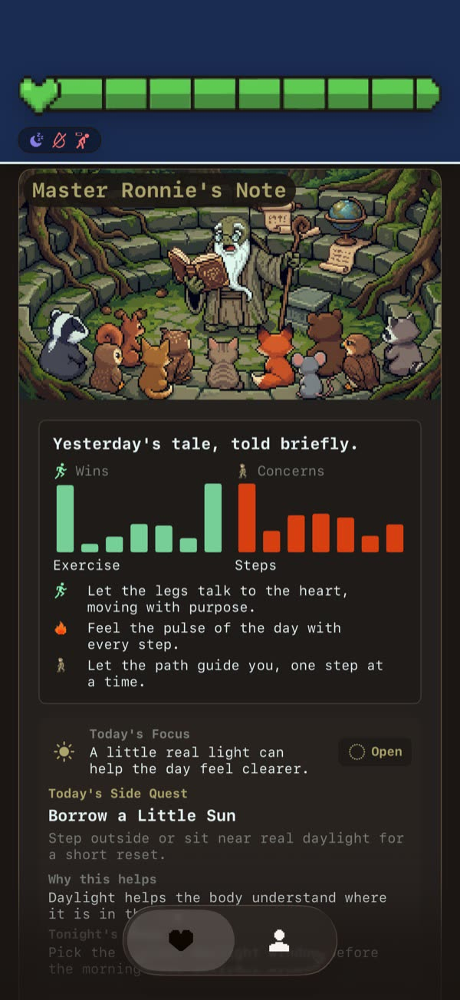
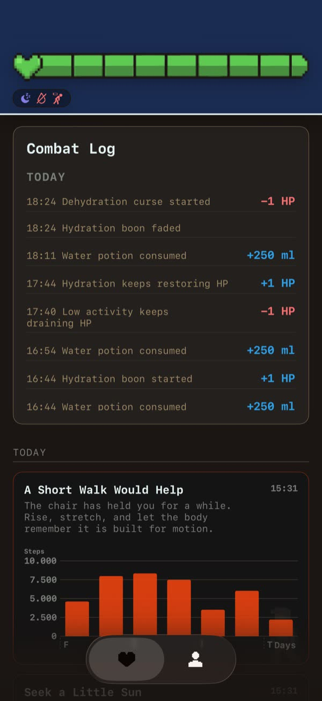

One approachable view of your day
Health data can be useful without becoming another demanding dashboard. With your permission, HealthBar brings available signals such as movement, water, sleep, mood, and recovery into one game-inspired daily view. HP, buffs, and debuffs help describe patterns in plain language.

Small prompts, not prescriptions
Master Ronnie offers manageable tiny quests such as drinking water, taking a walk, pausing for a mindful minute, or resting. These suggestions support everyday awareness; they are not diagnoses, treatments, clinical scores, or a replacement for professional care.
Check in where it fits
- iPhone: explore your daily view and patterns.
- Home and Lock Screen: glance at supported widgets.
- Apple Watch: keep HealthBar nearby with its companion and complications.
- Your permissions: choose which available Apple Health data you share.

Private, playful, and grounded
HealthBar uses the language of games to make daily signals easier to approach. An HP value is a playful summary inside the app—not a medical measurement or assessment. Your body is more complex than any score, so the experience emphasizes patterns and small wins rather than perfection.
Frequently asked questions
What does HealthBar do with Apple Health data?
You choose which available data to share. HealthBar uses those selected signals to create your daily wellness view.
Is HealthBar a medical device?
No. It is a wellness companion and does not diagnose, treat, or provide medical advice.
Can I check HealthBar without opening the app?
Supported widgets, an Apple Watch companion, and complications make quick check-ins possible.
What are tiny quests?
They are manageable wellness suggestions such as water, a walk, mindfulness, or rest—not medical recommendations.